全部章节S04 · 土司寨·信任不靠嗓门大
按章审阅 · 12 张剧情图。点击图查看大图。
S04-01 · 寨门对峙

幽白的熟人姿态被横杖截住，首领的戒备有具体旧伤而非无理刁难。
162 KB原图对照
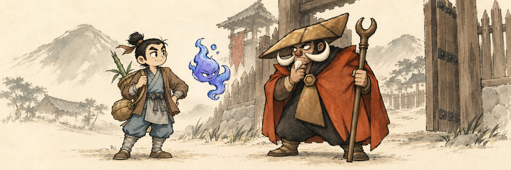
S04-02 · 破局入寨
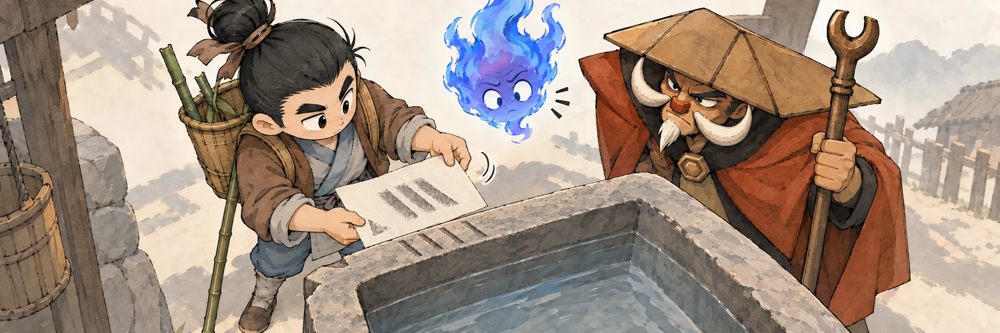
把拓样转半圈才对上旧水槽，幽白的悬浮视角成为既合理又好笑的破局点。
160 KB原图对照
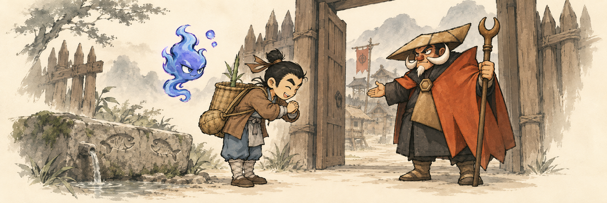
S04-03 · 一步一酒入寨门
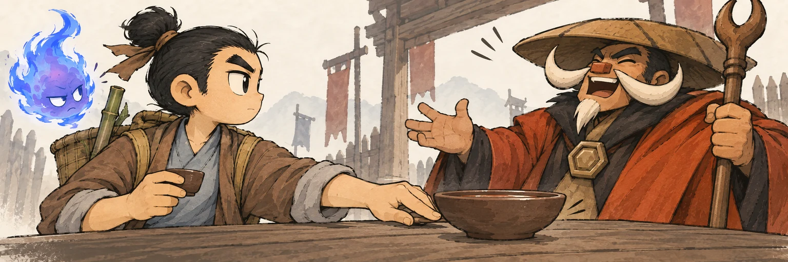
主角坦然推回满碗，首领由审视转为大笑，信任来自承认能力边界。
169 KB原图对照
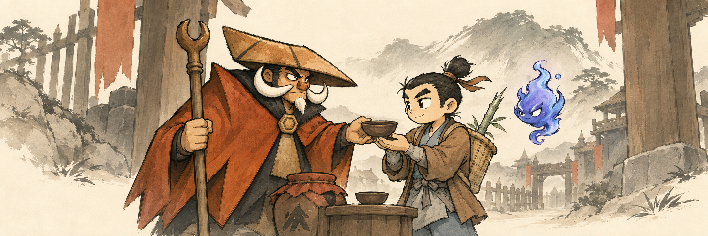
S04-04 · 逛逛寨子
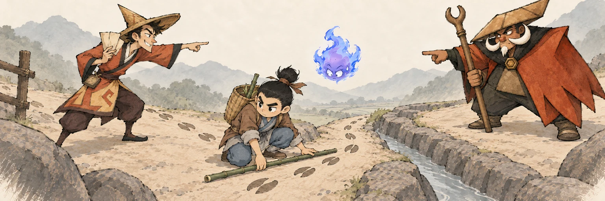
找牛与查水两拨手势相撞，主角把两人的注意力一起引到同向的牛迹与旧渠。
183 KB原图对照
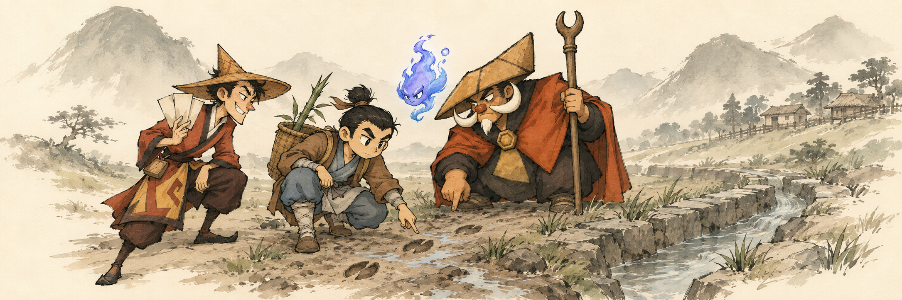
S04-05 · 牛牛去哪／枯田引流
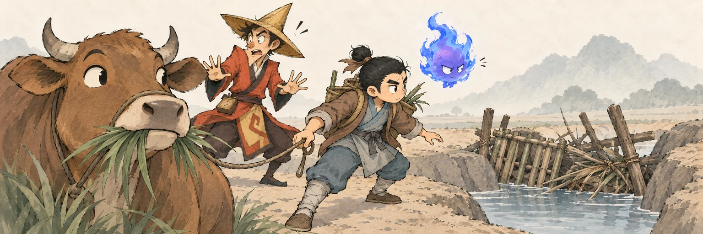
焦急找牛的人急刹在悠闲咀嚼的牛面前，牛让开视线后暴露真正的堵水物。
183 KB原图对照
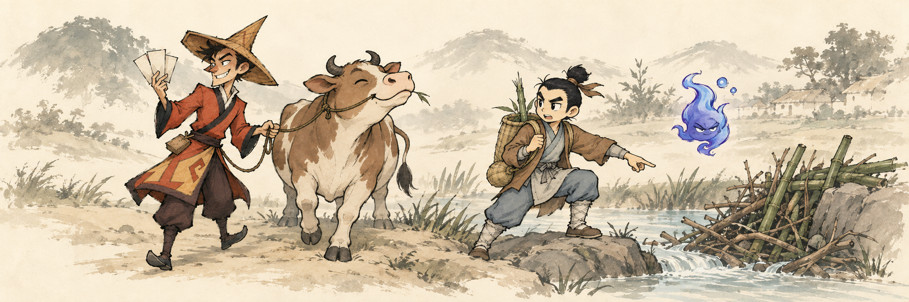
S04-06 · 流向推演／暗河开凿
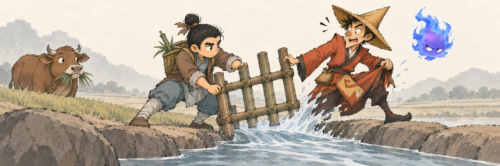
宏大的挖河计划被脚边旧出口打断；清开篱笆时一股水泼湿宋金宝的花哨衣摆。
158 KB原图对照
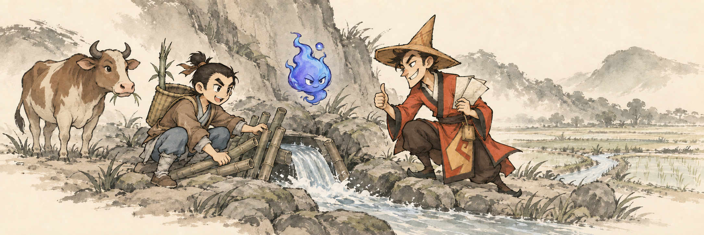
S04-07 · 牛来
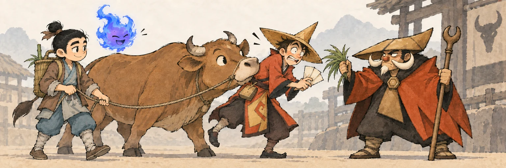
想躲开首领的宋金宝，被牛顶着背送到首领面前，动物自然行为造成喜剧转折。
166 KB原图对照
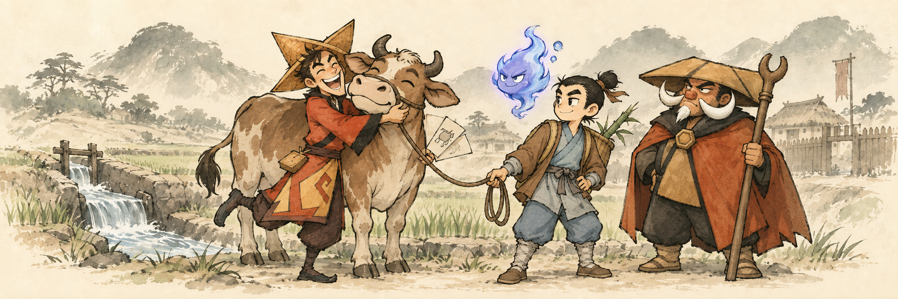
S04-08 · 土司羊皮卷
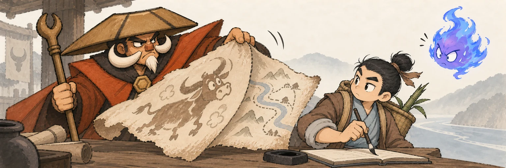
被当成神秘异兽的夸张牛画翻过去，背面才是真正实用的寨道水图。
158 KB原图对照
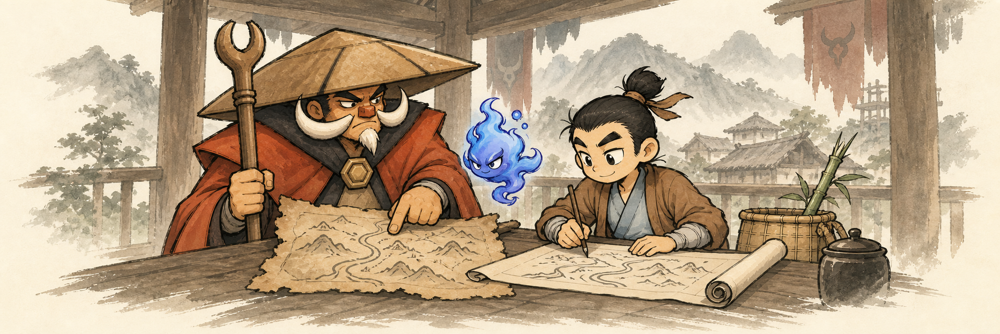
S04-09 · 土司寨遗痕
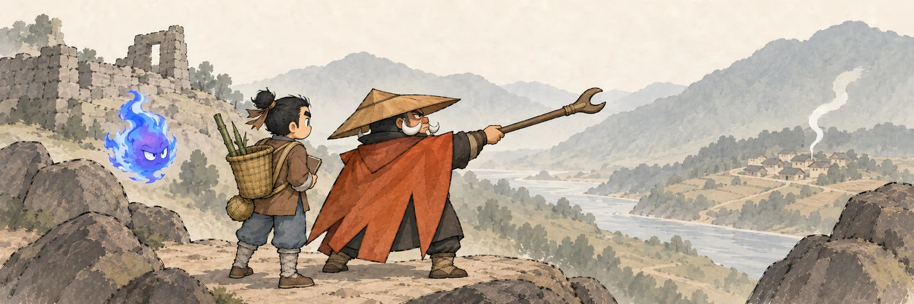
首领的杖从废旧寨墙划向新寨炊烟，空间里同时看见过去与现在。
151 KB原图对照
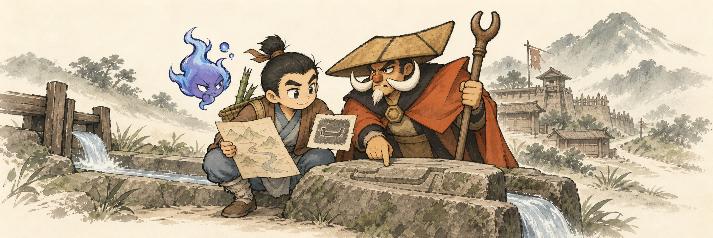
S04-10 · 祝酒送别
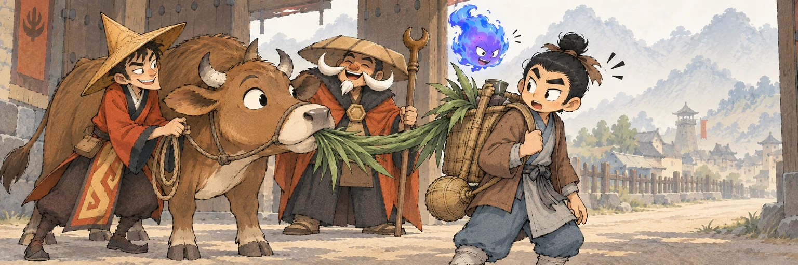
庄重祝词被牛的胃口打断，众人各护其物，却已完全没有初入寨时的隔阂。
224 KB原图对照
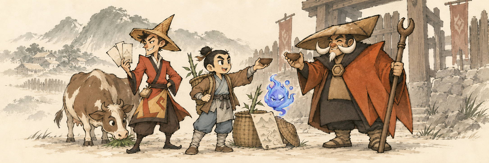
S04-11 · 寨前受挟
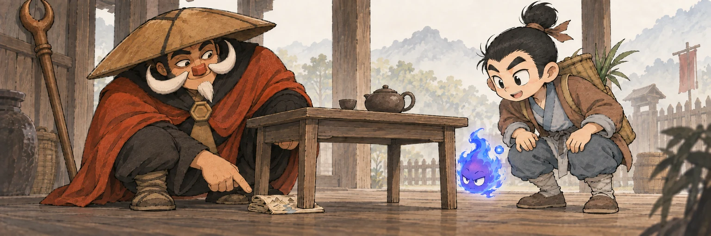
首领掀桌露出垫脚的假宝图，自嘲把先前强硬背后的经验与分寸说开。
160 KB原图对照
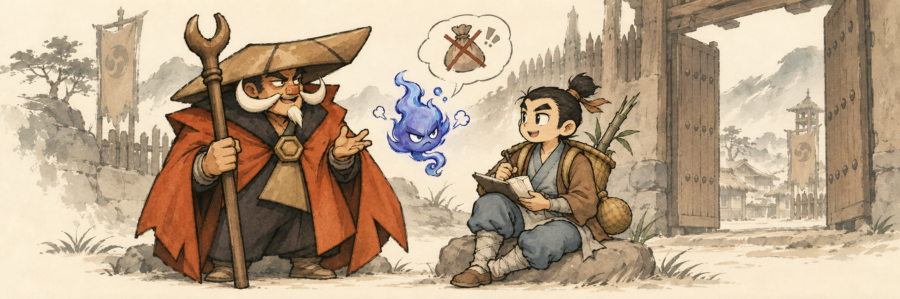
S04-12 · 寨中风雨
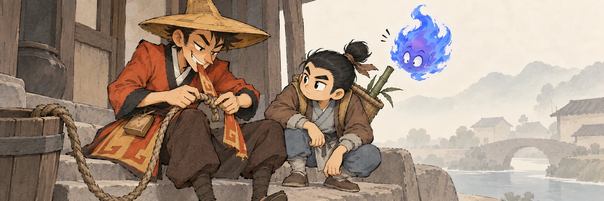
花哨的宋金宝咬紧绳结，把华服的一角拆给牵牛绳，表明他真正看重什么。
155 KB原图对照
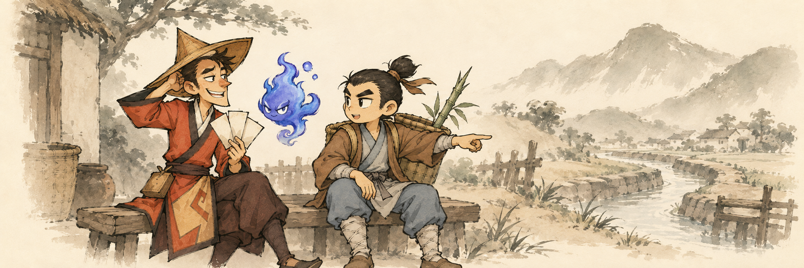